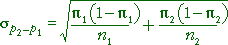
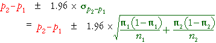

Estimating the standard error
The most important parameter of the distribution of p2 - p1 is its standard deviation. This is also the standard deviation of the estimation error when p2 - p1 is used to estimate π2 - π1 -- the standard error of the estimate.

Unfortunately the parameters π1 and π2 are unknown in practical situations. However we can replace them by their sample equivalents to estimate the standard error.

Confidence interval for difference
The accuracy of our estimate of π2 - π1 depends on its standard error and is best described by a confidence interval.
Any normally distributed quantity has probability 0.95 of being within 1.96 standard deviations of its mean, so
Prob ( p2−p1 is within π2−π1 ± 1.96 σp2−p1 ) = 0.95
This equation would suggest a 95% confidence interval for π2 - π1 of the form

However since this formula depends on the unknown values, π1 and π2, it cannot be used. Instead, we replace them in the formula with their sample equivalents to obtain a rough confidence interval

The refinement of replacing the constant 1.96 by a t-value, as was done when comparing population means, is not appropriate here. When the sample sizes are small, the distribution of p2 - p1 is noticably discrete so the equations underlying the confidence interval, which are based on a normal approximation, may be quite inaccurate. As a result, we should avoid this type of confidence interval when sample sizes are small and we use the value '2' instead of '1.96' to acknowledge the roughness of the formulae.
Examples
The diagram below shows how 95% confidence intervals are found and interpreted for a few data sets.